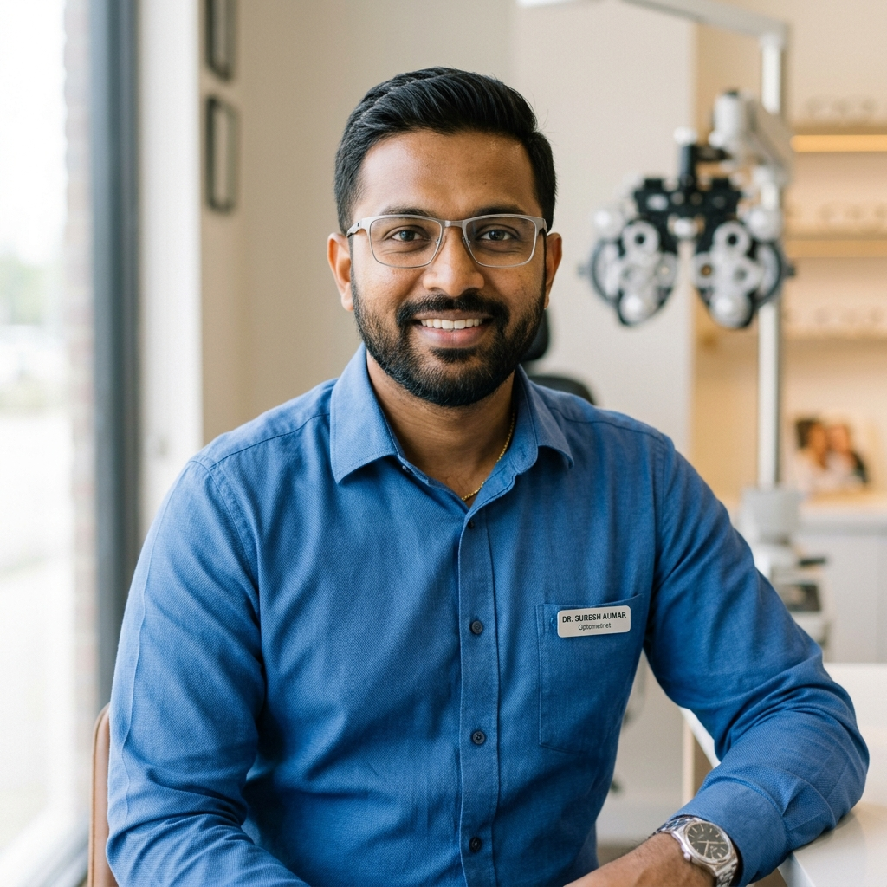
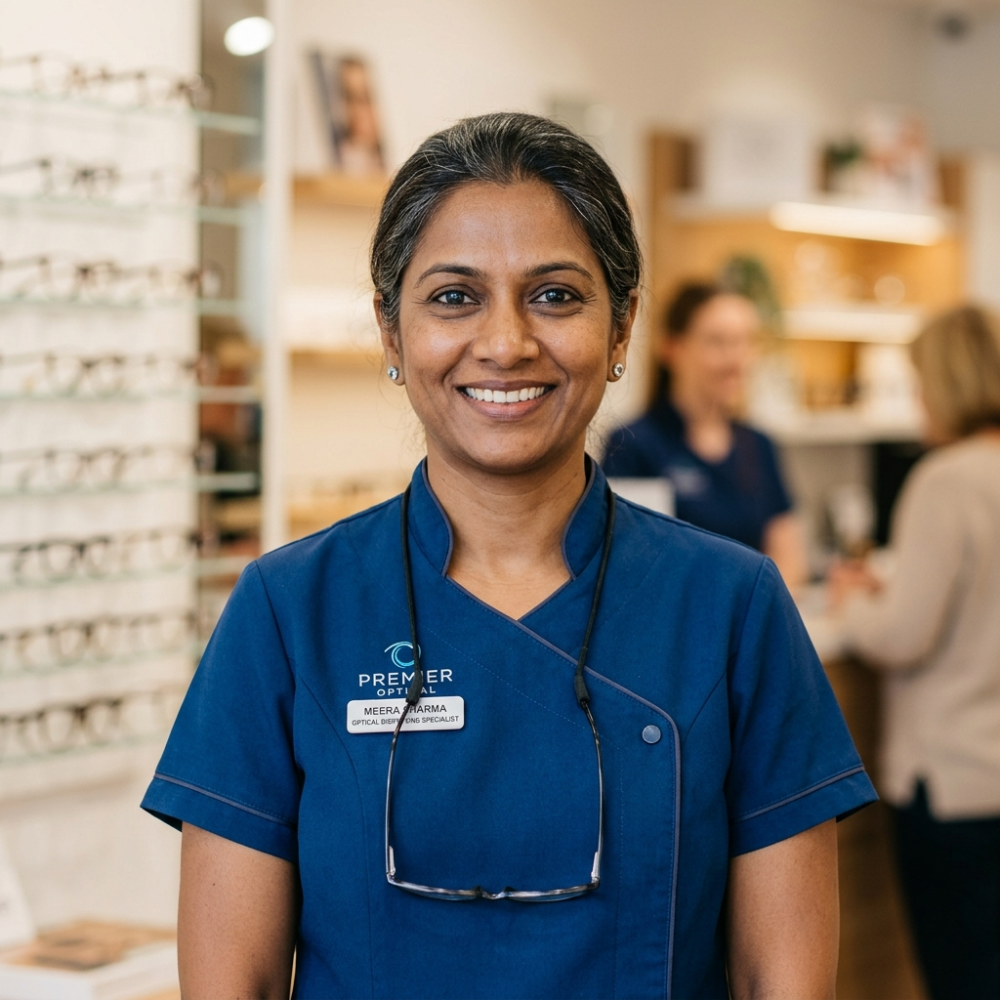

Our Story
Two decades of passion, precision, and personalised eye care — serving Chennai with excellence since 2005.

Excellence
A Legacy of Clear Vision
VisionCare Optical was founded in 2005 by Dr. Suresh Krishnamurthy, a passionate optometrist who believed that clear vision should be accessible, affordable, and delivered with warmth. What began as a single consultation room in T. Nagar has grown into Chennai's most trusted optical care destination.
Today, our team of 8 qualified optometrists and 15 optical dispensers serve over 20,000 patients annually. We combine clinical excellence with an extensive frame collection and state-of-the-art lens technology — all delivered with the personal touch of a family practice.
Mission, Vision & Values
Our Mission
To provide every patient with the most accurate eye care diagnosis, the finest quality eyewear, and an experience that treats them as an individual — not a number. Accessible excellence for every age.
Our Vision
To be South India's most trusted eye care brand — where every patient leaves with clearer sight, better confidence, and the knowledge that their eye health is in expert hands.
Patient First
Every decision we make is guided by what is best for our patients' long-term eye health and well-being.
Clinical Excellence
We invest in the latest diagnostic equipment and ongoing professional development for our clinical team.
Integrity
Honest advice, transparent pricing, and no upselling. We recommend only what your eyes genuinely need.
Community Care
Free school eye screenings, corporate wellness programs, and discounted care for senior citizens.
Sustainability
Eco-friendly packaging, digital prescriptions, and partnerships with sustainable eyewear manufacturers.
Innovation
Continuously adopting new technologies — from AI-assisted screening to precision digital lens manufacturing.
The Experts Behind Your Vision
Our optometrists bring decades of combined clinical experience, a passion for eye health, and a genuine care for every patient they see.

Dr. Suresh Krishnamurthy
Founder & Lead Optometrist
M.Optom, FAIO. 22 years of clinical experience. Specialises in paediatric optometry and low vision rehabilitation.
Dr. Anitha Rajan
Senior Optometrist
B.Optom, PGDOP. 14 years experience. Expert in contact lens fitting and myopia management for children.

Dr. Vijay Mohan
Optometrist
M.Optom. 10 years experience. Specialist in progressive lens fitting and occupational vision assessments.

Kavitha Sundaram
Head of Optical Dispensing
Diploma in Ophthalmic Optics. 12 years. Expert eyewear stylist helping patients find frames that complement their face and lifestyle.
Two Decades of Growth
Founded in T. Nagar
Dr. Suresh Krishnamurthy opened our first clinic with a single consulting room, one refraction unit, and an unshakeable commitment to patient care.
Expanded Frame Collection
Launched our in-house dispensing lab and expanded to over 200 frame styles, bringing international brands to Chennai patients.
Advanced Diagnostic Suite
Invested in OCT retinal scanning, digital fundus photography, and corneal topography — bringing hospital-grade diagnostics to our clinic.
ISO 9001 Certification
Achieved ISO 9001:2015 quality management certification — one of the few independent optical clinics in Tamil Nadu to do so.
Digital Transformation
Launched online appointment booking, digital prescription records, and AI-assisted pre-screening to serve our growing patient base more efficiently.
Come Visit Our Clinic
Experience the VisionCare difference for yourself. Walk in or book an appointment — our team is ready to help.